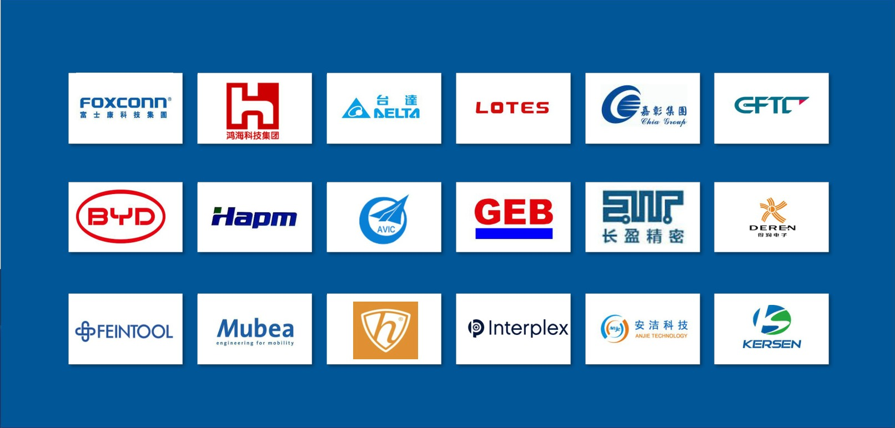

来料与牌号确认
核对材料牌号、炉批、状态、规格和客户图纸要求，减少替代错误。
面向汽车、电子和精密制造客户，KSC 注重材料一致性、尺寸稳定性、包装保护和批次追溯。
重点关注客户最容易产生风险的环节：牌号、硬度、尺寸、表面、边部、包装和标签。
核对材料牌号、炉批、状态、规格和客户图纸要求，减少替代错误。
关注厚度、宽度、长度、公差、毛刺和板形，支持后续冲压与装配。
根据材料和运输距离确认防锈、防潮、覆膜、托盘和标签方式。
按客户需要保留批次、规格、加工记录和出货信息，方便后续追踪。

对汽车、电子、精密五金客户而言，材料供应不只是价格，还包括稳定供货、质量一致性、包装规范和快速响应。
东莞、苏州、新余、越南、泰国基地协同，为中国及东南亚客户提供更灵活的交付安排。
广东省东莞市大朗镇大朗水新路218号201室
昆山市高新技术开发区迎宾中路1299号
越南海防市安峰坊安阳工业园区CN9地块C-14地块
把图纸、公差、包装规范、标签要求和出货地区发给我们，KSC 可以协助确认可执行方案。